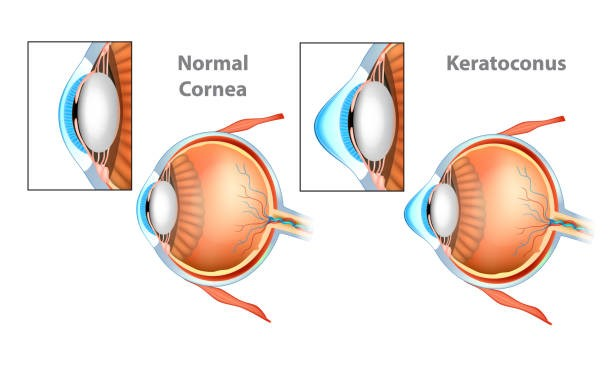

طب العيون في تركيا
يمكنكم الإطلاع على احدث التقنيات العلاجية في طب العيون في تركيا , تمتلك تركيا العديد من المستشفيات الطبية الحديث والتي تمتلك احدث الاجهزة الطبية والكوادر الطبية الخبيرة التي جعل من تركيا دولة مميزة في طب العيون

القرنية المخروطية: أسبابها ومراحلها
ينتشر مرض القرنية المخروطية بين الشباب ويتخوف الكثير من الإصابة بالعمى تعرف على القرنية المخروطيه وكيفية معرفة وتشخيص القرنية المخروطية وأسباب حدوثها
القرنية هي الطبقة الخارجية للعين والواق لها وتساهم في تشكيل حاجز يحمي العين من الأوساخ والجراثيم وغيرها من المواد المؤذية و تلعب دورا مهما في الرؤية ، وبسبب عوامل غير واضحة يقل سماكة القرنية ويتغير شكلها إلى شكل مخروطي ، مسببة سوء الرؤية وأعراض أخرى ويختلف شدتها ومراحلها مع مرور الوقت مما قد يشكل إعاقة لممارسة بعض مهام الحياة اليومية ، سنتعرف أكثر عليها في مقالنا هذا وكيفية تشخيصها وأضرارها.
جدول المحتويات
ماهي القرنية المخروطية ؟
المخروطية هو عندما تصبح القرنية رقيقة وذو انتفاخات مثل مخروط ، حيث تغيير شكل القرنية يجعل أشعة الضوء أبعد عن التركيز ، ونتيجة لذلك تكون رؤيتكم ضبابية ومشوهة، مما يجعل المهام اليومية مثل القراءة أو القيادة صعبة, العديد من مرضى القرنية المخروطية لا يدركون أنهم مصابون بالمرض ، الأعراض الأولى هي ضبابية طفيفة في الرؤية أو ضعف الرؤية تدريجياً التي لا يمكن تصحيحها بسهولة.
الأعراض الأخرى تشمل:
- وهج وهالات عند التعرض للضوء
- صعوبة في الروية الليلية
- تهيج العين أو صداع مرفق مع ألم في العين
- زيادة الحساسية للضوء الساطع
- تفاقم مفاجئ لسوء الرؤية أو ضبابية في الرؤي
ماهو شكل القرنية المخروطية؟

كيفية معرفة و تشخيص القرنية المخروطية
بالإضافة إلى التاريخ الطبي الكامل وفحص العين، قد يقوم أخصائي العناية بالعين بإجراء الاختبارات التالية لتشخيص القرنية المخروطية:- طبوغرافيا القرنية: هذه هي الطريقة الأكثر دقة لتشخيص القرنية المخروطية المبكرة ومتابعة تطوره ، يتم التقاط صورة محوسبة تنشئ خريطة لمنحنى القرنية ، يمكن فهم تضاريس القرنية بنفس طريقة فهم تضاريس التلال والوديان ، تمثل الألوان الباردة (الزرقاء) مناطق أكثر تسطحًا ، بينما تشير الألوان الأكثر سخونة (البرتقالي والأحمر) إلى الانحدار ، يمكن لطبيب البصريات المختص قراءة تضاريس القرنية للمساعدة في تشخيص نوع القرنية المخروطية.
- فحص المصباح الشقي: يمكن أن يساعد هذا الفحص للقرنية في اكتشاف التشوهات في الطبقات الخارجية والوسطى للقرنية.
- فحص وقياس سمك القرنية: هذا الفحص يستخدم لقياس المنطقة الأَرَقّ في القرنية ، يبلغ متوسط سمك القرنية حوالي 555 ميكرومتر، يمكن أن يؤدي ترقق مخروط الانتفاخ إلى كسر القرنية ، والندوب ، وفقدان البصر ، ومضاعفات إضافية يمكن أن تؤدي إلى عملية اختراق قرينة (زرع القرنية) ، لذلك غالبًا ما يتم قياس ترقق القرنية لرصد تطور المرض وتنظيمه ، وتصنف حسب سمك القرنية :
- القرنية المخروطية الخفيفة = أقل سماكة للقرنية of 500 ميكرومتر.
- القرنية المخروطية المعتدلة = أقل سماكة للقرنية 300 ميكرومتر - 500 ميكرومتر.
- القرنية المخروطية المتقدمة = أقل سماكة للقرنية 300 ميكرومتر.
- الأبحاث الحديثة تتناول عن أن وجود اليزوزيم النشط في السائل الدمعي دليل أساسي على إثبات مخروطية القرنية ، واظهرت ايضا انه الجمع بين تقنية فحص شذوذ القرنية و تحديد الليزوزيم في السائل الدمع يجعل من الممكن تشخيص القرنية المخروطية في مراحلها المبكرة
أعراض القرنية المخروطية
تشمل العلامات والأعراض المرتبطة بهذا المرض الرؤية المزدوجة عند النظر بعين واحدة ، ظهور الهالات حول الأضواء الساطعة ، تغير الرؤية المفاجئ في عين واحدة ، والرؤية المشوهة أو غير الواضحة (اعتمادًا على مرحلة المرض) ، وتشمل التغييرات الأخرى المرتبطة مع القرنية المخروطية تطوير قصر النظر والنظراللابؤري مع شكل القرنية المتغير ، الأعراض الأخرى تشمل:النظر اللابؤري
- عدم وضوح الرؤية .
- صعوبة الرؤية في الضوء الخافت .
- رؤية مشوهة.
- قصر النظر.
- توهج.
- اضمحلال لوني في مقدمة العين.
- حساسية العين للضوء.
الضوء على القرنية المخروطية
ومن المعروف أن القرنية المخروطية تسبب حساسية حادة للضوء ، لا سيما أن الحالة تصبح أسوأ ، بعض الناس الذين يعانون من القرنية المخروطية قد لا يخرجون في الهواء الطلق دون نظارات شمسية أو قبعة بسبب الصعوبة الحساسية الضوء المتزايد ، وتظهر الهالات عشكل دوائر ساطعة حول مصادر الضوء، ستلاحظ هذا أكثر في الليل لا سيما عندما تقود السيارات والمصابيح الأمامية قادمة بإتجاهك. يحدث الوهج في رؤيتك عندما يدخل الضوء إلى عينك ويعرقل رؤيتك.
أنواع القرنية المخروطية
هناك أربعة أنواع رئيسية للقرنية المخروطية وهي:- ذو الشكل المُسْدَف .
- الكروي ويطلق عليه ايضا (ضخامة القرنية).
- الحلمي .
- البيضاوي .
ويستند تصنيف أنواع القرنية المخروطية إلى حد كبير على مكان منطقة الانتفاخ (أو مخروط) على تضاريس القرنية , وهناك نوع ايضا يدعى بالقرنية المخروطية الخلفية هي حالة نادرة جدا حيث السطح الداخلي للقرنية رقيقة بشكل غير طبيعي، في حين أن الخارج لا يزال طبيعيا في انحناء ، يمكن أن يكون عبر السطح الداخلي كله أو في جزء واحد فقط ، وهو يميل إلى أن يكون أقل تأثيرا على الرؤية لأن السطح الخارجي للقرنية لا يتأثر.
مراحل القرنية المخروطية
- القرنية المخروطية المبكرة: القرنية المخروطية الأكثر شيوعا في هذه المرحلة هي التي ذو المُسْدَف الشكل ولها تشوه بسيط جدًا في القرنية ؛ له تأثير ضئيل أو معدوم على جودة الرؤية ويظهر تقدمًا ضئيلًا أو معدومًا.
- القرنية المخروطية المعتدلة: يزداد تشوه القرنية ويمكن ملاحظة تغيرات القرنية النموذجية للقرنية المخروطية ، مع انخفاض جودة الرؤية بالنظارات.
- القرنية المخروطية المتقدمة: تشوه كبير للقرنية مع تغير معتدل للقرنية المخروطية ، تندب خفيف إلى متوسط في القرنية.
- القرنية المخروطية الشديدة: تشوه حاد للقرنية مع تندب كبير للقرنية وترققها.
- القرنية المخروطية المعتدلة = انحناء القرنية الأشد بمقدار ≤ 48.00D
- القرنية المخروطية المتوسطة = انحناء القرنية الأشد من 48.00D إلى 53.00D
- القرنية المخروطية المتقدمة = الانحناء الحاد للقرنية بمقدار 53.00D
القرنية المخروطية في سن الثلاثين
يبدأ القرنية المخروطية عادة في سن البلوغ ويتطور إلى منتصف الثلاثينات ، لا توجد طريقة للتنبؤ بمدى سرعة تطور المرض، يؤثر القرنية المخروطية عادة على كلتا العينين، حيث يتأثر أحدهما أكثر من الآخر، وتؤكد دراسة حديثة أن القرنية المخروطية قد تستمر في التقدم بعد سن 30 ، يجب مراقبة الأشخاص الأكبر سنًا الذين يعانون من القرنية المخروطية ، خاصة فيما يتعلق بإمكانية ربط الكولاجين بالقرنية أو التصحيح اللابؤري في جراحة الساد.ما هي أسباب تطور القرنية المخروطية؟
لا يعرف الخبراء أسباب حدوث القرنية المخروطية ، قد تكون بعض الحالات ناتجة جزئيًا عن الجينات. ترتبط بعض الحالات الصحية بهذا الاضطراب وقد تساعد في حدوثه أو تسريعه , وتشمل هذه الاضطرابات:
- متلازمة داون
- مُتَلاَزِمَةُ إيلَر-دانلوس
- كمنة ليبير الخلقية
- إصابة العين (خاصةً من كثرة فرك العين أو استخدام العدسات اللاصقة)
- تَكَوُّنُ العَظْمِ النَّاقِص
- التهاب الشَّبَكِيَّةِ الصِّباغِيّ
- اعتلال الشبكية عند الاطفال الخدج
- التهاب القرنية و المُلْتَحِمَةِ الرَّبيعِيّ
- انقطاع التنفس أثناء النوم
القرنية المخروطية عند الاطفال
قد يولد الطفل مع استعداد لتطوير القرنية المخروطية ، ولأن القرنية المخروطية تجعل القرنية رقيقة وحساسة ، يجب على الأطفال الذين يعانون من الحالة تجنب فرك عيونهم ، وتجنب أدوية المسببة للحساسية والمحفزات هي استراتيجية وقائية مهمة للأطفال الذين يعانون من حساسية تشدهم لحك عيونهم.
نهاية القرنية المخروطية
في حالات نادرة ، تتسبب القرنية المخروطية الشديدة في حدوث مضاعفات تسمى استسقاء القرنية ، يحدث هذا عندما ينكسر جزء من القرنية ، يتسبب هذا في تدفق السائل الموجود في العين إلى القرنية بشكل غير طبيعي ، هذا يمكن أن يسبب ألما شديدا وتورم ، قد يتسبب أيضًا في فقدان الرؤية المفاجئ , قد تحتاجون إلى ارتداء عدسات لاصقة خاصة أو استخدام قطرات خاصة للعين إن كان لديك الحاجة لترطيب القرنية ، غالبًا ما تختفي هذه الحالة في غضون أسابيع قليلة.
نصائح لمرضى القرنية المخروطية
بالإضافة إلى ارتداء النظارات أو العدسات اللاصقة لتحسين الرؤية، فيما يلي نصائح للمراهقين أو الشباب الذين يعانون من القرنية المخروطية للحفاظ على البصر.
- قوموا بتجنب أشعة الشمس المباشرة أو وهج شاشة الهاتف المحمول في العينين
- اغسل يديك قبل لمس العينين لتقليل خطر الإصابة بالعين
- ارتداء النظارات التصحيحية أو العدسات اللاصقة كما هو مقرر من الطبيب
- تجنب فرك عينيك
- علاج حالة "العين الجافة" إذا كان لديك
- ادلي بكافة المعلومات الطبية المرتبطة بتاريخك المرضي لطبيبك
- استفسر من طبيبك عن المرحلة التي وصل إليها المرض ومدى شدته
- يجب الإستعلام عن أي العدسات اللاصقة التي تناسب المرحلة المرضية للقرنية المخروطية لديك
- اسئل عن مدى تصالب الألياف الكولاجينية في القرنية لديك
- قم بفحص دوري لمراقبة مدى تقدم الحالة لديك .
اسئلة شائعة حول القرنية المخروطية
لا ، لكن يسبب تراجع أو فقدان مفاجئ لجزء من الرؤيا في أحد العينين أو كلاهما ، أما العمى الكامل فنادر الحدوث.
نعم. الصداع من الأعراض الممكنة التي تسببها القرنية المخروطية.
لا. هناك بعض المتلازمات المرضية التي يعتقد أنها أحد مسببات المرض لكن العديد من الاصابات لم يكن لها مصدر وراثي
نعم يمكن معالجة الحالات البسيطة بالنظارة الطبية أو العدسات اللاصقة الطبية و بالحالات الشديدة يلجئ لعمليات مختلفة تبعا للحاالة المرضية
لا تسببها بشكل مباشر ، لكن عبر تشويش الرؤيا و الضبابية يمكن أن تسسبب الدوخة
لا. لكن ربما تشكل إعاقة للذين يعملون بأعمال حساسة أو تضمن قيادة السيارة والعربات
لا ، لكن يمكن أن تتطور لتصبح حالة صعبة للمريض إن تركت بلا علاج
نعم. بحالات عديدة تترافق مع ألم وصداع
يمكن أن تجعلك القرنية المخروطية متعبة أو تحتاج إلى النوم.
نعم. في كثير من الحالات يصاحبها ألم وصداع.
ليس دائمًا ، ولكن في بعض الأحيان.
لا. ومع ذلك ، قد تكون إعاقة لأولئك الذين يعملون في عمل حساس أو القيادة والمركبات.
تختلف استمرارية تقدم القرنية المخروطية من شخص لآخر وقد يتوقف البعض عن سن الأربعين وقد يستمر بعد ذلك.
قد يسبب ألم العين ، ولكن ليس دائمًا.
لا ، ليس كذلك. تساعد العلاجات في تحسين الرؤية ووقف تطور المرض
لا ، لا يسبب القرنية المخروطية.
نعم ، قد يساعد ولكن عندما يزداد عدم انتظام الشكل بشكل متزايد ، لم يعد يوفر تصحيحًا مناسبًا للرؤية. لدى Ilajak Medical أحدث تقنيات وتقنيات التشخيص للتصحيح البصري وطب العيون والتشخيص مع أطباء ذوي خبرة.
ترتبط بعض الحالات الصحية بهذا الاضطراب وقد تساعد في حدوثه. وهذا يشمل متلازمة داون ، متلازمة إهلر دانلوس ، مرض ليبر الخلقي ، إصابة العين (خاصة من كثرة فرك العين أو استخدام العدسات اللاصقة).
يمكن أن تسبب القرنية المخروطية قصر النظر (قصر النظر) مع اللابؤرية غير المنتظمة الشديدة. هذا يعني تشويه الضوء عندما يدخل عينيك. نتيجة لذلك ، تظهر الصور ضبابية.
القرنية المخروطية لا تسبب الجلوكوما ، ولكن بعض علاجات القرنية المخروطية قد يكون لها مضاعفات ، بما في ذلك الجلوكوما.
لا تسبب ذلك بشكل مباشر ، لكن ضبابية الرؤية يمكن أن تسبب الدوار.
لا ، القرنية المخروطية تسبب فقدانًا مفاجئًا لجزء من الرؤية بإحدى العينين أو كلتيهما. العمى الكامل نادر الحدوث.
لا ، ولكن يتم استخدام العلاجات لوقف تقدم القرنية المخروطية وتحسين الرؤية.
يمكن للعمليات أن تصحح خطأ الانكسار الخفيف إلى المتوسط ، ويمكن أن تصحح العدسات داخل العين من الخطأ الانكساري المنخفض إلى العالي المرتبط بالقرنية المخروطية.
نعم ، الصداع من الأعراض المحتملة التي تسببها القرنية المخروطية.
لا ، ولكنه يتسبب في حدوث تراجع مفاجئ أو فقدان جزء من الرؤية بإحدى العينين أو كلتيهما. العمى الكامل نادر الحدوث.
يمكن إدارتها لوقف تقدم الحالة. يمكن علاج الحالات الطفيفة بالنظارات الطبية أو العدسات اللاصقة. في الحالات الشديدة يتم علاجها بعمليات مختلفة حسب الظروف الطبية.
وهو ناتج عن التمزق الشديد لغشاء ديسيميت في وضع توسع القرنية. Hydrops هو مصطلح يستخدم للدلالة على تراكم غير طبيعي للسوائل في تجويف الجسم أو الأنسجة. يحدث استسقاء القرنية الحاد في حوالي 3٪ من مرضى القرنية المخروطية.
اطلع على أحدث المنشورات والأخبار الطبية
عمليات شفط الدهون بالفيزر في تركيا والأسعار 2021
يعتبر شفط الدهون بالفيزر من أفضل عمليات علاج السمنة المفرطة. تعرف معنا على مميزات وعيوب شفط الدهون بالفيزر وكيف تتم العملية وشاهد الفرق قبل وبعد في تركيا.
طرق علاج طول النظر في تركيا وأحدث التقنيات
يعاني الكثير من كبار السن وحتى البالغين من مرض طول النظر . سنتحدث في هذا المقال عن كيفية علاج طول النظر وأسباب هذا المرض ونسبة نجاح العلاج .
الفرق بين زراعة الشعر في ايران وتركيا 2021
بالرغم من أن أسعار زراعة الشعر بين تركيا وايران لا تختلف كثيرا إلا أن هنالك الكثير من الفروق التي قد تحدد لك الدولة الأفضل لزراعة الشعر فيها.
طرق علاج قصر النظر في تركيا وأحدث التقنيات
يعاني الكثير من الأطفال وحتى البالغين من مرض قصر النظر. سنتعرف في هذا المقال على أفضل طرق علاج قصر النظر وأسباب هذا المرض ونسبة نجاح العلاج .